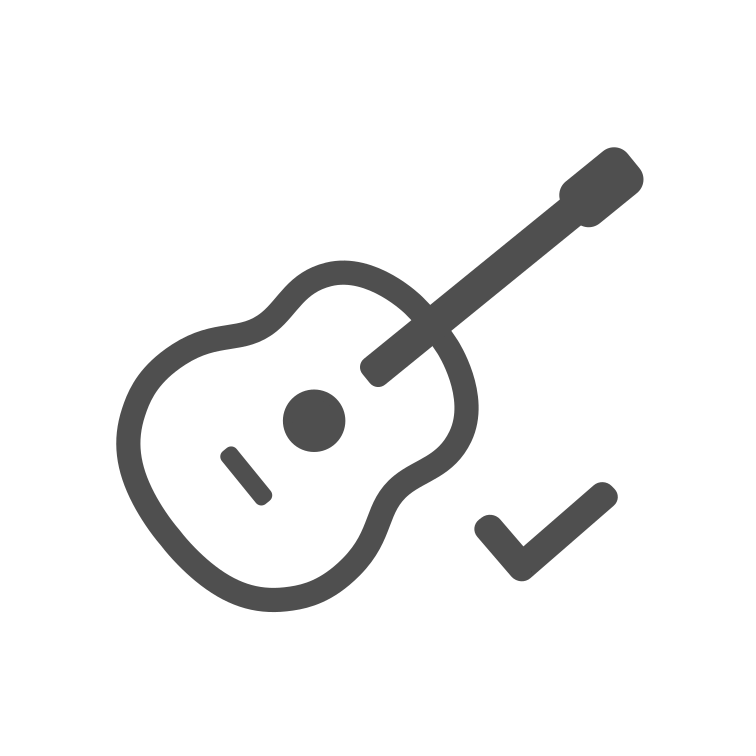
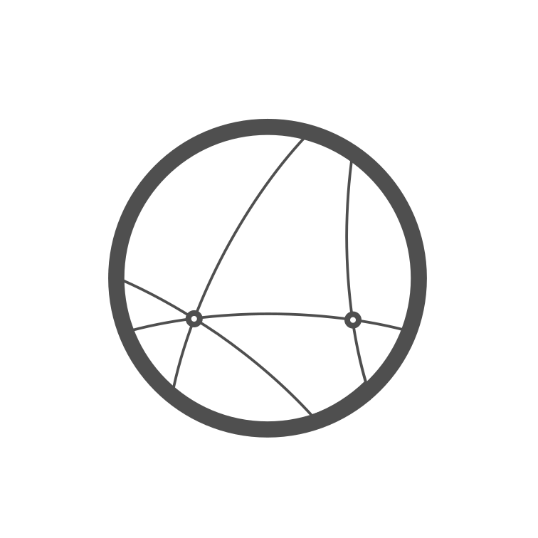

Como funciona?
Inscrição e Turmas
Primeiro passo para participar do projeto é realizar a inscrição. Após o cadastro, o perfil do
aluno é analisado para que ele seja direcionado a uma turma compatível com seu nível de
conhecimento e habilidade no violão. Caso queira, ele também pode manifestar preferência por um
determinado nível (que será analisado).
Cada turma é composta por, no máximo, dez alunos, o que garante um ambiente mais personalizado e
maior atenção individual durante as aulas.
Horários e Duração das aulas
16 aulas
ao longo de 4 meses
Aulas ao vivo
Semanais com duração de 1 hora
No seu ritmo
Escolha o melhor dia e horário*
Apoio
Orientação individual semanal de até 20 minutos
*O aluno deverá manifestar interesse por um dos horários disponíveis no momento
da inscrição,
e
caso haja vaga, será alocado na turma correspondente (conforme o nível de conhecimento e
habilidade no violão)
O que é necessário para as aulas?

Violão em boas condições (cordas novas são recomendadas)

Conexão estável com a internet
Dispositivo com câmera e microfone (computador, tablet ou smartphone)
Tempo, disposição e compromisso com o ritmo do projeto
Metodologia
Aula online
As aulas são realizadas de forma online, utilizando a plataforma Google Meet.
↓
Estudo aplicado
O aluno aplica os conhecimentos aprendidos em aulas práticas e exercícios guiados e envia ao
professor.
↓
Feedback
O professor analisa os exercícios enviados e oferece feedback personalizados compartilhados
individualmente ou nas aulas online.
↓
Acompanhamento individual
Caso o professor ou aluno sinta necessidade, as orientações individuais são os recursos para
superar desafios específicos, sem custo adicional.